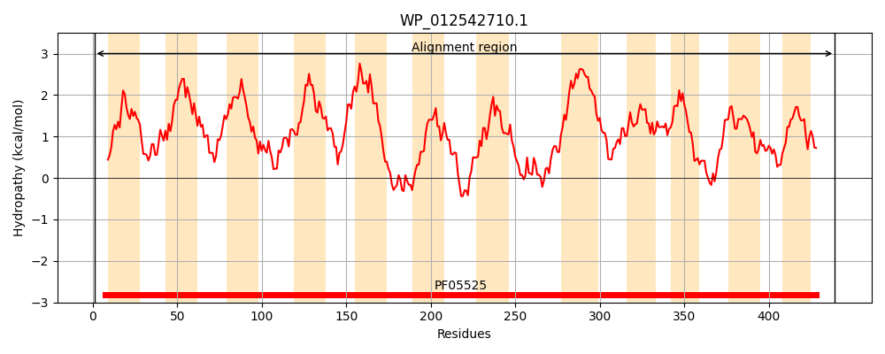
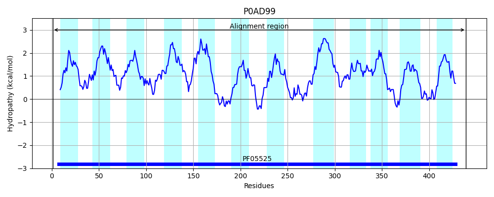
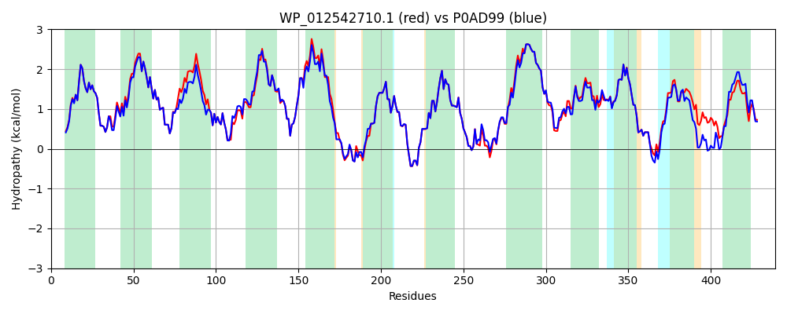

Hit Accession: P0AD99
Hit TCID: 2.A.26.1.10
Hit Description: gnl|BL_ORD_ID|8744 gnl|TC-DB|P0AD99|2.A.26.1.10 Branched-chain amino acid transport system 2 carrier protein OS=Escherichia coli (strain K12) GN=brnQ PE=1 SV=1
Mach Len: 439
e:0.000000
Query TMS Count : 12
Hit TMS Count: 12
TMS-Overlap Score: 11.350000
Predicted Substrates:CHEBI:6308;L-threonine, CHEBI:6255;L-isoleucine, CHEBI:6321;L-valine, CHEBI:6260;L-leucine, CHEBI:22918;branched-chain amino acid
BLAST Alignment:
Score: 2025 , Bit scores: 784 bits, E-value: 0.0e+00, Alignment length: 439, Percentage identity: 90
Query: 1 MTHQLKSRDIIALGFMTFALFVGAGNIIFPPMVGLQAGEHVWTAAIGFLITAVGLPVLTVVALAKVGGGVESLSTPIGKVAGILLAVVCYLAVGPLFATPRTATVSFEVGIAPLTGDGPLPLLIYSVIYFALVILVSLYPGKLLDTVGNFLAPLKIIALIVLAVAAIIWPAGPISDALEAYRTAPFSNGFVNGYLTMDTLGAMVFGIVIVNAARSRGVSEARLLTRYTVWAGLMAGVGLTLLYLALFRLGSDSATLVDQSANGAAILHSYVQHTFGGAGSFLLAALIFIACLVTAVGLTCACAEFFAQYLPFSYRTLVFILGLFSMAVSNLGLSHLIQVSIPVLTAIYPPCIALVVLSFTRSWWHNSSRVIAPAMFISLMFGIIDGIKSSAFAAILPAWTARLPLAEQGLAWLMPTAVMVFLAVIWDRAAGRQVASSAH 439
MTHQL+SRDIIALGFMTFALFVGAGNIIFPPMVGLQAGEHVWTAA GFLITAVGLPVLTVVALAKVGGGV+SLSTPIGKVAG+LLA VCYLAVGPLFATPRTATVSFEVGIAPLTGD LPL IYS++YFA+VILVSLYPGKLLDTVGNFLAPLKIIAL++L+VAAI+WPAG IS A EAY+ A FSNGFVNGYLTMDTLGAMVFGIVIVNAARSRGV+EARLLTRYTVWAGLMAGVGLTLLYLALFRLGSDSA+LVDQSANGAAILH+YVQHTFGG GSFLLAALIFIACLVTAVGLTCACAEFFAQY+P SYRTLVFILG FSM VSNLGLS LIQ+S+PVLTAIYPPCIALVVLSFTRSWWHNSSRVIAP MFISL+FGI+DGIK+SAF+ ILP+W RLPLAEQGLAWLMPT VMV LA+IWDRAAGRQV SSAH
Sbjct: 1 MTHQLRSRDIIALGFMTFALFVGAGNIIFPPMVGLQAGEHVWTAAFGFLITAVGLPVLTVVALAKVGGGVDSLSTPIGKVAGVLLATVCYLAVGPLFATPRTATVSFEVGIAPLTGDSALPLFIYSLVYFAIVILVSLYPGKLLDTVGNFLAPLKIIALVILSVAAIVWPAGSISTATEAYQNAAFSNGFVNGYLTMDTLGAMVFGIVIVNAARSRGVTEARLLTRYTVWAGLMAGVGLTLLYLALFRLGSDSASLVDQSANGAAILHAYVQHTFGGGGSFLLAALIFIACLVTAVGLTCACAEFFAQYVPLSYRTLVFILGGFSMVVSNLGLSQLIQISVPVLTAIYPPCIALVVLSFTRSWWHNSSRVIAPPMFISLLFGILDGIKASAFSDILPSWAQRLPLAEQGLAWLMPTVVMVVLAIIWDRAAGRQVTSSAH 439 | Protein Hydropathy Plots: |
|---|
|  |  |
Pairwise Alignment-Hydropathy Plot:
|
|---|
|  |